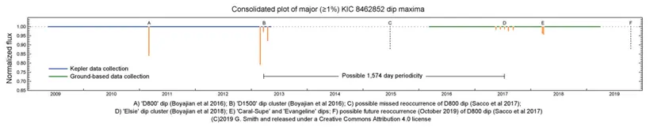
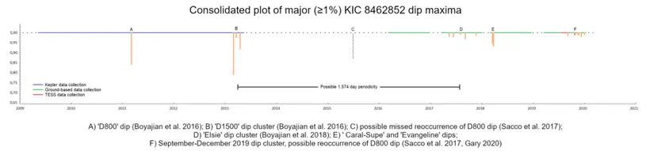

The observation
Tabby’s Star (KIC 8462852, now Boyajian's Star) was flagged in the Kepler data by citizen scientists in 2015. Its light dips by up to 22 per cent, irregularly, and the dips are asymmetric — unlike a planet transit, which is periodic and symmetric.
Maps, diagrams and images




Long-term photometry from photographic plates suggested a slow decline over a century as well, which made the star look even stranger, though that claim has been disputed on the basis of plate calibration.
The explanations
Dust and debris. The leading explanation. Dust absorbs starlight and re-emits it in the infrared; a 2018 campaign that caught the star dimming in real time found the dimming was wavelength-dependent — blue light was blocked more than red — exactly as dust grains of the wrong size would do. A transiting planet or an opaque structure would block all wavelengths equally.
Comet fragments. A family of comets breaking up on an eccentric orbit. Consistent with some of the data, but hard to keep supplied.
Instrumental effects. Kepler's calibration and the star's rotation have both been proposed as contributors.
The idea — an artificial swarm of collectors — was raised by the star's discoverers only to be dismissed, and then repeated endlessly. It made one class of prediction: no wavelength-dependent dimming, plus excess mid-infrared emission from waste heat.
Neither was found. Radio searches for narrowband signals found nothing. The dust signature is now measured, and the megastructure hypothesis is not supported.
The interesting part is why it spread: an unexplained dip in a star's light is a genuine puzzle, and 'scientists baffled' plus 'aliens?' is a stable media formula. The archive keeps the page because correcting it is useful.
What it teaches
That an unexplained observation can be a real scientific puzzle while its most dramatic interpretation is already excluded by ordinary physics.
That the decisive evidence was often the least dramatic: measuring which wavelengths dimmed, not listening for signals.
Sources for this page
- Wikipedia, “Tabby’s Star” — light curve, hypotheses, observationsen.wikipedia.org
- Boyajian et al. (2016), MNRAS — the original studydoi.org
- Boyajian et al. (2018), ApJL — the first post-Kepler dipsdoi.org
- Wikipedia, “KIC 8462852” — observation historyen.wikipedia.org
Open resources on this topic
- PapersOpen-access articles: DOAJ · PubMed Central · Internet Archive Scholar
- BooksPublic-domain and borrowable copies: Open Library · Project Gutenberg · Google Books · Internet Archive
More images
Cite this page
Momin, S. (2026). Tabby’s Star. The Larger World Archive. https://drsamonline.github.io/LARGE_GLOBE/tabbys-star.htmlMomin, Sohil. “Tabby’s Star.” The Larger World Archive, 2026, https://drsamonline.github.io/LARGE_GLOBE/tabbys-star.html.Momin, Sohil. “Tabby’s Star.” The Larger World Archive, 2026. https://drsamonline.github.io/LARGE_GLOBE/tabbys-star.html.@misc{tabbys2026tabbys,
author = {Momin, Sohil},
title = {Tabby’s Star},
year = {2026},
howpublished = {The Larger World Archive},
url = {https://drsamonline.github.io/LARGE_GLOBE/tabbys-star.html},
note = {Last reviewed 20 November 2026}
}Last reviewed 20 November 2026 · Corrections policy · this page is not peer reviewed